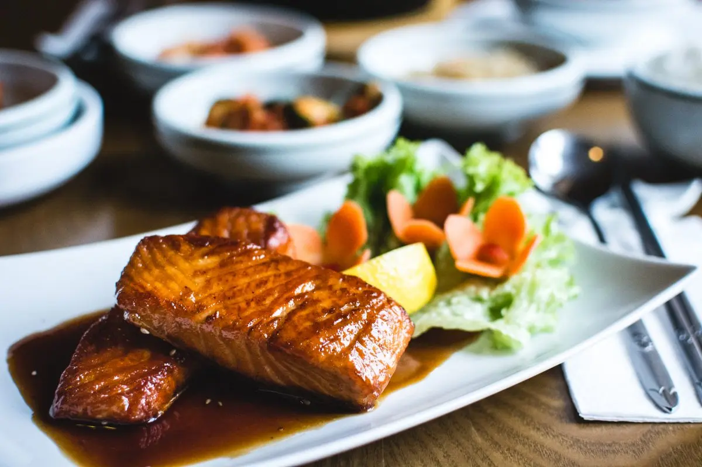

Presentación
Este es un sitio web de recetas, aquí puedes encontrar un montón de platos para cocinar, ¡e incluso recetas de comida china y japonesa!. ¡Si te gusta leer y cocinar esta es la mejor manera de reunirte con tus amigos y preparar un montón de deliciosas recetas!. Puedes encontrar recetas de sushi, bento, fideos, sopas, ensaladas y muchos otros platos. Para que te hagas una idea, aquí puedes leer una receta de fideos con salsa de sésamo, ¡para hacerla en tu cena de hoy!. Como puedes ver, el sitio web está bien organizado y contiene mucha información útil sobre cocina.
Sopas, carnes, pasteles, bebidas, las mejores recetas están aquí. Algunas de ellas provienen de los libros de cocina del autor del blog, pero la mayoría son enviadas por los lectores. Si está interesado en presentar una receta, envíanosla.
Te preguntarás que de donde vienen estos vídeos. Son los videos de nuestro guía espiritual, Pepe, el cocinero de Gibraltar. No hay un cocinero con mayor arte, gracia, salero y mezclas de palabras locas. No lo olvides, se como Pepe, prepara las recetas y be happy con tus friends.
¡Visita nuestras categorías!
-

Bebidas y cócteles
Mejores guiones, actores, directores ... Se consideran las mejores películas por los premios que han ganado. Y tú, ¿qué opinas?
Ver últimas recetas + -

Platos para almuerzos y comidas
La ciencia ficción no siempre está llena de monstruos y batallas. ¡Descubre con nosotros la conquista del espacio!
Ver últimas recetas + -

Postres
¿Eres de los que les gusta estar toda la película al borde de la silla, preguntándote qué pasará después y qué está pasando realmente?
Ver últimas recetas + -

Bollería y pastas
¡Volvemos a los clásicos! Desde los hermanos Marx a Hitchcock, repasaremos las películas que marcaron generaciones.
Ver últimas recetas +